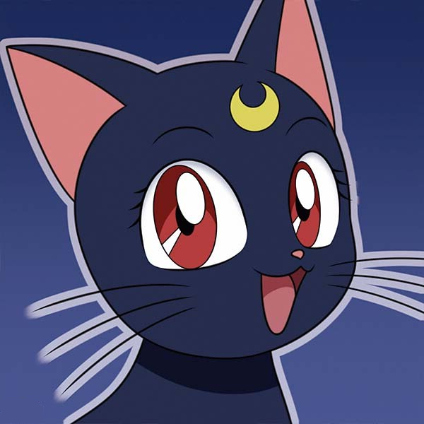

Luna

Luna, from Sailormoon, is a cute black cat with a crescent moon on her forehead. She's not just adorable but also wise and loyal, guiding the Sailor Guardians in their mission to protect the world. Luna's charm lies in her caring nature and unwavering dedication to her friends, making her a beloved character among fans worldwide.